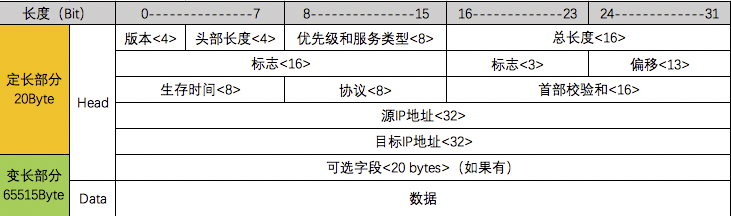

前言
我们每天都在使用互联网，通过互联网聊天、购物、听音乐、看电影，全世界有几十亿台电脑通过互联网两两交互，那什么是互联网呢？
互联网的核心是一系列协议，总称为互联网协议（Internet Protocol Suite），它们对电脑如何连接和组网，做出了详尽的规定，理解了这些协议，就理解了互联网的交互原理。
网络模型划分
计算机网络的各层及其协议的集合被称为网络的体系结构，按照不同的维度，其常被分为七层、五层、四层网络结构，如下图所示：
七层网络模型 — OSI（Open System Interconnection）
OSI — 开放式系统互联模型是一种概念模型，由国际标准化组织提出，并试图成为计算机在世界范围内互连为网络的标准框架，它具有七层网络结构。
四层网络模型 — TCP/IP
互联网协议套件（Internet Protocol Suite，IPS）是多个网络传输协议的集合，它为网际网络的基础通信提供架构支撑，由于该协议族中最核心的两个协议分别为 TCP（传输控制协议）和 IP（网际协议），因此它也被称为 TCP/IP 协议族，简称TCP/IP，它具有四层网络结构。
五层网络模型 — TCP/IP
OSI模型由国际标准化组织进行制定，它是正统意义上的国际标准，但其实现过于复杂、制定周期过长，在其整套标准推出之前，TCP/IP模型已经在全球范围内被广泛使用，所以 TCP/IP 模型才是事实上的国际标准。
TCP/IP 模型定义了应用层、传输层、网际层、网络接口层这四层网络结构，但并没有给出网络接口层的具体内容，因此在学习和开发中，通常将网络接口层替换为OSI七层模型中的数据链路层和物理层来进行理解，由此产生TCP/IP五层网络模型。
下面我们会对五层网络模型从下至上展开详细讲解。
物理层（Physical Layer）
电脑之间组网第一件事是通过网卡、网线、集线器、中继器、调制解调器、光缆、电缆、双绞线、无线电波等物理设备将电脑之间连接起来。
这就是物理层，是把电脑之间连接起来的物理手段，该层为上层协议提供了一个传输数据的可靠的物理媒体，它规定了网络的一些电气特性，比如高电压1、低电压0，组成比特流进行传输。
数据链路层（Data Link Layer）
数据链路层在物理层提供的服务的基础上向网络层提供服务，物理层单纯的电信号0和1没有任何意义，必需规定解读方式，如电信号多少位一组、每组什么意思，它规定了电信号的分组方式，以及物理寻址（MAC），将源自网络层来的数据可靠地传输到相邻节点的目标主机的网络层（广播）。
以太网协议（Ethernet Protocol）
早期的时候各个公司都有自己的分组方式、后来形成了统一的分组成帧标准，即以太网协议。
以太网规定，一组电信号构成一个数据包，叫做”帧”（Frame），每一帧分成两个部分：报头（Head）和数据（Data）。
Head部分为定长18字节，Data部分为46 ~ 1500字节，因此单帧最小长度为64字节（head 18 + data 46）， 单帧最大长度为1518字节（head 18 + data 1500），如果超出最大长度就分割成多个帧进行发送。
MAC地址（Media Access Control Address）
上面提到以太网数据包（Frame）的报头（Head）中包含源地址和目标地址信息就是网卡地址，即MAC地址。
每块网卡出厂时都有一个全世界独一无二的MAC地址，长度为6字节48位，通常用12个十六进制数表示，前6个十六进制数是厂商编号，后6个是该厂商的网卡流水号。
有了MAC地址，就可以定位网卡和数据包的路径了。
广播（Broadcasting）
我们现在知道了以太网数据包（Frame）的报头（Head）中包含的地址信息是MAC地址，我们知道本机网卡的MAC地址，但是我们还需要获取对端主机网卡的MAC地址，怎么获取呢？
答案是通过一种叫ARP的协议（下面会讲），我们可以得到对端主机网卡的MAC地址，但是怎么才能把数据包准确送到接收方呢？
答案是以太网采用了一种很”原始”的方式，它不是把数据包准确送到接收方，而是向本网络内所有主机发送，让每台计算机自己判断自己是否为接收方，它们读取这个包的”标头”找到接收方的MAC地址，然后与自身的MAC地址相比较，如果两者相同，就接受这个包做进一步处理，否则就丢弃这个包，这种发送方式就叫做”广播”（broadcasting）。
网络层（Network Layer）
有了以太网数据包的定义、网卡的MAC地址、广播的发送方式，世界上的计算机就可以彼此通信了。
问题是互联网是由一个个彼此隔离的子网组成的，广播出去的消息只有在同一子网内的主机才会收到，两个主机不在同一子网对端是收不到的，这种设计是合理的，如果一台主机发送的包全世界都会收到，这就不仅仅是效率低的问题了，这将会是一种灾难。
因此，必须找到一种方法，能够区分哪些MAC地址属于同一个子网络，哪些不是。如果是同一个子网络，就采用广播方式发送，否则就采用路由（向不同广播域/子网分发数据包）方式发送，遗憾的是，MAC地址本身无法做到这一点，它只与厂商有关，与所处网络无关。
至此网络层诞生了，它的作用是引进一套新的地址，使得我们能够区分不同的计算机是否属于同一个子网络，这套地址就叫做网络地址，简称网址。
网络层出现以后，每台计算机有了两种地址，一种是MAC地址，另一种是网络地址，两种地址之间没有任何联系，MAC地址是绑定在网卡上的，网络地址则是管理员分配的，它们只是随机组合在一起。
网络地址帮助我们确定计算机所在的子网络，MAC地址则将数据包送到该子网络中的目标网卡，因此，从逻辑上可以推断，必定是先处理网络地址，然后再处理MAC地址。
IP协定
规定网络地址的协议叫IP协议，它定义的地址称之为IP地址。
目前，广泛采用的是IP协议第四版，简称IPv4，IPv4规定网络地址由4字节点分十进制表示。
例如：127.0.0.1，范围：0.0.0.0 ~ 255.255.255.255
IP地址分成两部分，网络部分(标识子网)和主机部分(标识主机)，如果两个IP地址的网络部分相同，那就说明它们在同一子网内，但是我们不能确定IP地址中哪一部分是用来标识子网的，这就需要一个参数，子网掩码。
子网掩码
子网掩码就是用来确定IP地址中网络特征的一个参数，它在形式上等同于IP地址，同样是4字节点分十进制表示，转为二进制以后它的网络部分全部为1、主机部分全部为0，然后与IP地址进行按位与（&）运算，就可以得到IP地址中的网络部分。
例如：IP地址为：172.20.10.4，子网掩码为：255.255.255.0，那么就代表IP地址中前24位为网络部分，后8位为主机部分，就可以得出IP地址中的网络部分为：172.20.10.0
IP数据包
IP数据包也分为Head和Data部分，如下图所示：

IP数据包最大长度为65535字节，为理论上的最大长度，但前面说过以太网数据包的Data部分最长只有1500字节，因此，如果IP数据包超过了1500字节，它就需要分割成多个以太网数据包，分开发送了。
以太网协议无须为IP数据包定义单独的栏位，直接放入以太网包的Data部分即可，如下图所示：
ARP（Address Resolution Protocol）/RARP（Reverse Address Resolution Protocol）
因为IP数据包是放在以太网数据包里发送的，所以我们必须同时知道两个地址，一个是对方的MAC地址，另一个是对方的IP地址，对方的IP地址是已知的，但是我们不知道它的MAC地址，所以我们需要一种机制能够通过IP地址得到MAC地址，就是ARP — 地址解析协议。
ARP — 地址解析协议，也是一个数据包，如下所示：
ARP数据包同样包含在以太网数据包中，这个包会以广播的方式在发送端所处的子网内传输，在发送时目标主机MAC地址为FF:FF:FF:FF:FF:FF，表示这是一个广播地址，目标主机接收到ARP数据包后从中取出IP地址，与自身的IP地址进行比较，发现目标IP为本身的，就返回本身的MAC地址，否则就丢弃这个包。
需要注意的是，如果目标主机不在同一子网，那么ARP数据包中的目标主机IP为本机所在子网的网关IP。
RARP — 逆地址解析协议，功能和ARP协议相对，其将局域网中某个主机的MAC地址转换为IP地址。
传输层（Transport Layer）
网络层的IP帮我们区分子网，数据链路层的MAC帮我们找到主机，然后大家使用的都是应用程序，你的电脑上可能同事运行多个应用程序如播放器、聊天软件等，那么我们通过IP和MAC找到了一台特定的主机，如何标识这台主机上的应用程序呢？
答案便是端口（Port），端口即应用程序与网卡关联的编号，每个数据包都发到主机的特定端口，所以不同的程序就能取到自己所需要的数据。
端口是一个两字节的整数，范围是0到65535之间，0到1023的端口被系统占用，用户只能选用大于1023的端口，不管是浏览网页还是在线聊天，应用程序会随机选用一个端口，然后与服务器的相应端口联系。
传输层的功能就是建立端口到端口的通信，相比之下网络层的功能是建立主机到主机的通信，只要确定主机和端口，我们就能实现程序之间的交流。
因此，Unix系统就把主机+端口，叫做Socket（下面会讲），有了它，就可以进行网络应用程序开发了。
UDP（User Datagram Protocol）
有了端口以后，我们必须在数据包中加入端口信息，这就需要新的协议，最简单的实现叫做UDP — 用户数据报协议，它的格式几乎就是在数据前面，加上端口号。
UDP数据包，也是由Head和Data两部分组成，UDP数据包总长度最大65535字节，Head部分为定长8字节，Data部分为变长65527字节，如下图所示：
UDP数据包需要放在IP数据包的Data部分，IP数据包又是放在以太网数据包之中的，所以整个以太网数据包现在变成了下面这样：
TCP（Transmission Control Protocol）
UDP协议的优点是比较简单，容易实现，但是缺点是可靠性较差，一旦数据包发出，无法知道对方是否收到。
为了解决这个问题，提高网络可靠性，TCP协议就诞生了，这个协议非常复杂，但可以近似认为，它就是有确认机制的UDP协议，每发出一个数据包都要求确认，如果有一个数据包遗失，收不到确认，发出方就会认为这个包发送失败重新发送这个数据包。
因此，TCP协议能够确保数据不会遗失，它的缺点是过程复杂、实现困难、消耗较多的资源。
TCP数据包，也是由Head和Data两部分组成，Head部分为定长20字节加变长4字节扩展，TCP数据包和UDP数据包一样，都是内嵌在IP数据包的Data部分，TCP数据包没有长度限制，理论上可以无限长，但是为了保证网络的效率，通常TCP数据包的长度不会超过IP数据包的长度，以确保单个TCP数据包不必再分割。
TCP — 三次握手四次挥手
由于我们大部分使用的应用层协议都基于TCP协议通信，所以这里重点讲一下TCP协议。
上面说过了，TCP是基于连接的可靠性传输协议，TCP提供面向有连接的通信传输，面向有连接是指在数据通信开始之前先做好两端之间的准备工作，由此保证连接的可靠性。
如上图所示，TCP交互有三个阶段，连接创建、数据传输、连接销毁。
连接创建（三次握手）：
创建连接需要三次握手，是指建立一个TCP连接时需要客户端和服务器端总共发送三个包以确认连接的建立（Socket编程中，由客户端执行connect函数来触发)。
- 第一次握手：Client发送SYN包，请求建立新连接，Server收到Client发送的SYN包，此时Server知道：Client发送能力正常，自己的接收能力正常。
- 第二次握手：Server发送ACK包，表示收到Client发送的SYN包并同意创建新连接，Client收到Server发送的ACK包，此时Client知道：自己的收发能力都没问题，Server收发能力也没问题，但此时Server端还不知道自己的发送能力是否有问题，所以需要第三次握手。
- 第三次握手：Client发送ACK包，Server收到Client发送的ACK包，此时Server知道：Client和自己的发送和接收能力都没问题，到此连接创建阶段完成。
数据传输：
连接建立完成后，双方开始收发业务数据。
连接销毁（四次挥手）： - 第一次挥手：Client发送FIN包，请求断开连接，Server收到Client发送的FIN包，此时Server知道：Client已经没有新数据发送给自己了。
- 第二次挥手：Server发送ACK包，告诉Client自己已经收到了断开连接请求，Client收到Server发送的ACK包，此时Client知道：Server端收到了自己的断开连接请求，但是还不知道Server端有没有数据给自己。
- 第三次挥手：Server发送FIN包，告诉Client自己也没有数据需要传输了，Client收到Server发送的FIN包，此时Client知道：Server也没有数据需要发送给自己了，但是Server不知道自己是否收到了这个通知，所以需要第四次挥手。
- 第四次挥手：Client发送ACK包，告诉Server自己已经收到了通知，至此，双方都可以确认对端不会再有数据发送给自己，断开连接。
TCP — 为什么握手需要三次，而挥手需要四次
TCP连接在传输数据前需要双方需要确定对端的收发能力是否正常，以此为前提则必须要握手三次，可以查看上面三次握手流程。
那么为什么断开连接需要四次挥手呢，因为创建连接与断开连接有个本质区别就是断开连接前是可能有数据在传输的，正常情况断开连接的流程是由Client触发的，Server突然收到断开连接的请求，然后返回ACK包告诉Client自己已经收到请求，但是Server需要检查是否有数据在传输，由于TCP连接是全双工的，所以双方需要确定都不会进行数据传输后才可以关闭，Server检查并处理完正在传输的数据以后会主动给Client发送FIN包，告诉Client自己也没数据需要传输了，已经准备好断开连接了，这一步就是多出来的那一次挥手。
应用层（Application Layer）
应用程序收到传输层的数据，接下来就要进行解读，由于互联网是开放架构，大家都可以开发本身的应用程序，数据来源五花八门，必须事先规定好格式，否则根本无法解读。
因此产生了应用层，作用就是规定应用程序的数据格式，这是最高的一层，直接面对用户，它的数据就放在TCP/UDP数据包的Data部分，于是到了应用层以太网的数据包就变成下面这样：
DHCP（Dynamic Host Configuration Protocol）
DHCP — 动态主机配置协议，它的数据包结构如下：
DHCP是建立在UDP协议上的应用层协议，整个数据包形式为：
DHCP采用客户端（67端口）／服务器模式（68端口），客户端通过DHCP协议和DHCP服务交换信息，服务器会返回分配给客户端的网络地址信息（IP、子网掩码、网关地址、DNS服务器等等）。
DHCP提供三种IP分配方式：
- 自动分配是当DHCP客户端第一次成功的从DHCP服务器获取一个IP地址后，就永久的使用这个IP地址。
- 手动分配是由DHCP服务器管理员专门指定的IP地址。
- 动态分配是当客户端第一次从DHCP服务器获取到IP地址后，并非永久使用该地址，每次使用完后，DHCP客户端就需要释放这个IP，供其他客户端使用。
DNS（Domain Name System）
DNS — 域名系统，是因特网的一项核心服务，它作为可以将域名和IP地址相互映射的一个分布式数据库，能够使人更方便的访问互联网，而不用去记住能够被机器直接读取的IP数串，简单来说DNS就是维护域名与IP地址之间关系的系统。
DNS协议使用了UDP和TCP两种协议，并占用对应协议的53端口，DNS数据包结构如下：
增加了DNS数据包的以太网协议结构如下：
Socket
我们知道两个进程如果需要进行通讯最基本的一个前提是能够唯一的标示一个进程，在本地进程通讯中我们可以使用PID来唯一标示一个进程，但PID只在本地唯一，网络中的两个进程PID冲突几率很大，这时候我们需要另辟它径了，我们知道网络层IP协议中的IP地址可以标识唯一主机，而传输层TCP/UDP协议的端口号可以唯一标示主机的一个进程，这样我们可以利用IP地址＋协议＋端口号精准标识出网络中的一个进程。
能够唯一标示网络中的进程后，它们就可以利用Socket进行通信了，什么是socket呢？
我们常常把Socket翻译为套接字，Socket是在应用层和传输层之间的一个抽象层，它把TCP/IP层复杂的操作抽象为几个简单的接口供应用层调用用来实现应用程序进程的网络通信。
Socket起源于UNIX，在UNIX一切皆文件哲学的思想下，Socket是一种打开—读/写—关闭模式的实现，服务器和客户端各自维护一个文件（SocketFD），在建立连接打开后，可以向本身文件写入内容供对方读取或者读取对方内容，通讯结束时关闭文件。
网络通信流程
以访问www.google.com为例，来模拟一个完整的网络通信，用来梳理一下上面所讲到的知识。
一台计算机要访问网络资源首先要连接网络，连接网络需要四个必要参数，IP地址、子网掩码、网关IP、DNS，获取IP地址分有两种方式，一是手动填写网络管理员分配的IP地址，二是通过DHCP服务动态获取IP地址，我们以第二种为例。
- 通过DHCP服务获取IP地址、子网掩码、网关IP、DNS等网络信息，让计算机连接网络
- 然后浏览器输入网址www.google.com，经过DNS服务解析成目标主机的IP地址
- 由于访问www网址使用的是应用层的HTTP协议，浏览器生成HTTP请求数据包，假设生成HTTP请求包大小为2000字节。
- HTTP数据包需要放置在传输层TCP协议的Data部分，TCP数据包Head部分需要设置通信双方的端口，HTTP协议默认端口80，所以目标端口为80，源端口为本机随机生成（1023 ~ 65535），由于TCP协议的Head部分为定长20字节，所以目前的数据包大小为2020字节。
- 然后TCP数据包需要放置在IP数据包的Data部分，IP数据包Head部分需要设置通信双方的IP地址，本机IP地址通过DHCP已经得知，目标主机IP地址通过DNS服务也知道了，由于IP协议的Head部分为定长20字节，所以目前的数据大小为2040字节。
- 最后IP数据包放置在数据链路层以太网帧的Data部分，以太网数据包Head部分需要设置通信双方的MAC地址，源MAC地址为本机网卡的MAC地址，目标MAC地址通过ARP协议得到，由于DNS服务返回www.google.com域名所对应的IP地址与本机IP不在同一子网，所以在发送ARP请求时ARP协议中的目标IP地址为本机所在子网的网关IP（DHCP返回），目标MAC地址则为FF:FF:FF:FF:FF:FF，表明这是一个广播地址。
- 由于以太网协议规定Data部分最大为1500字节，但是目前数据有2040字节，所以会分成两包发送。
- 经过多个网关的转发，google服务器收到来自我们本机的发送的两个以太网数帧，根据IP数据包Head部分的序号将两包数据拼接起来，取出完整的TCP数据，然后读取TCP数据包里面的的HTTP请求数据，接着做出HTTP响应，在用TCP协议发送回来，响应步骤和我们发送步骤一样，本机接收到来自google服务器的响应数据以后，将网页显示出来，到此，一次网络通讯就结束了。